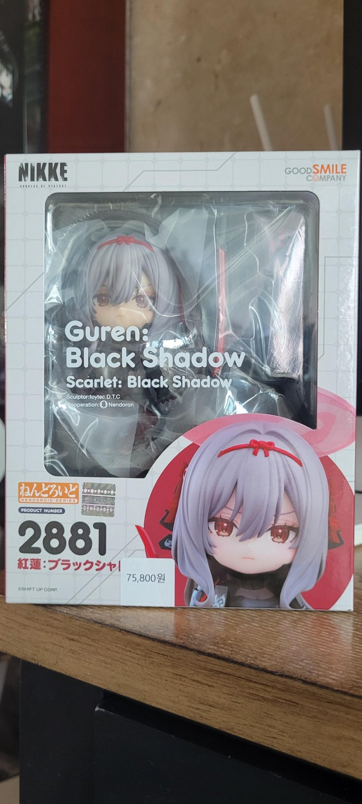
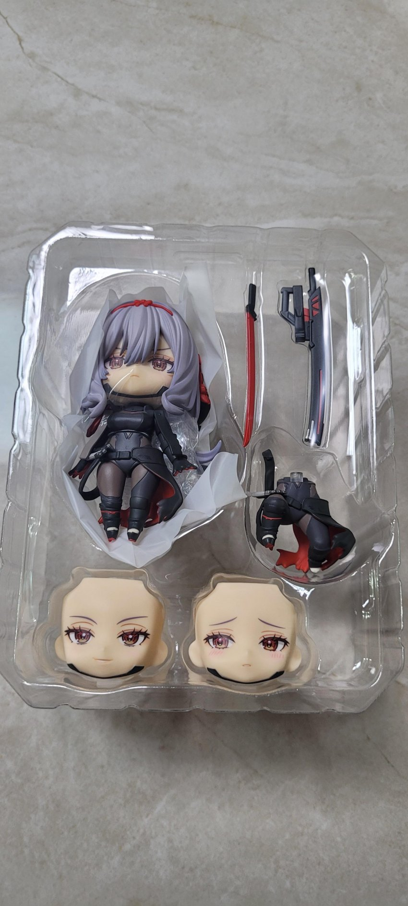
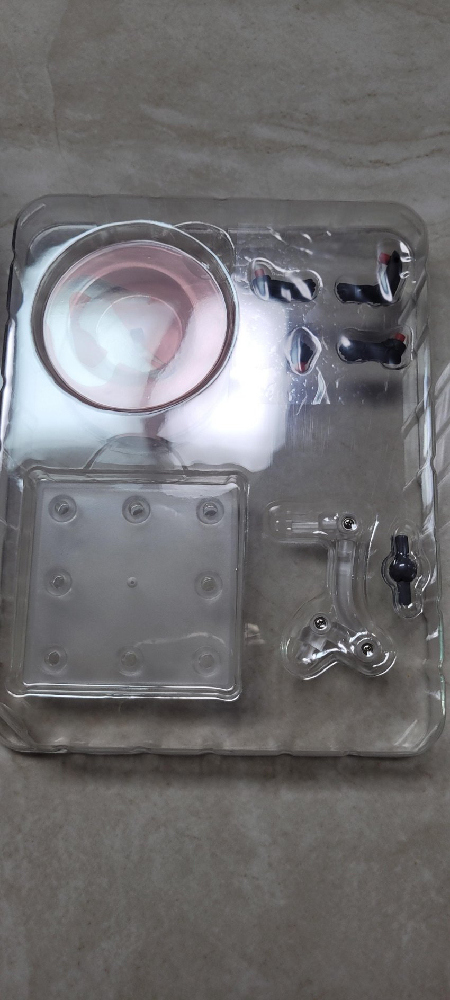
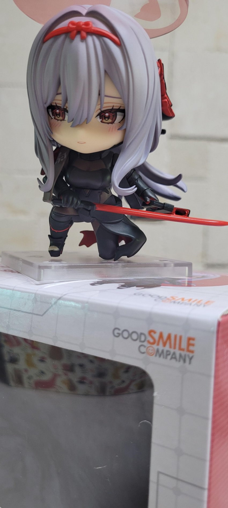
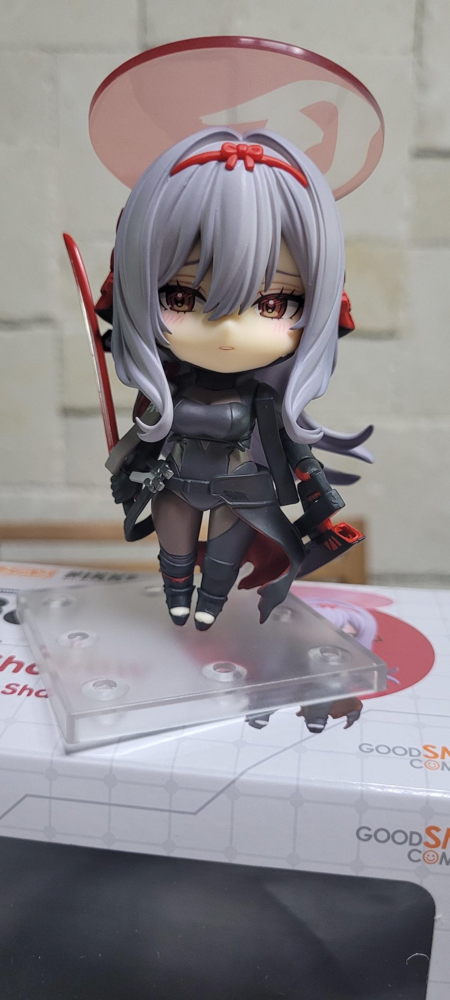
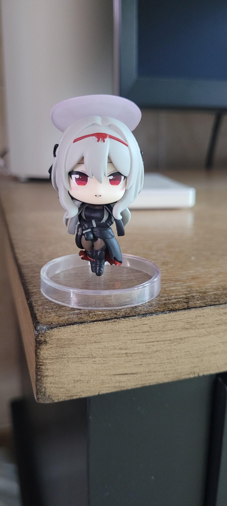

용산 아이파크몰 갔는데 있어서 못 참고 질러옴
내 아내 존나 이쁘다
가격은 75800
첫 넨도라 비싼건진 잘은 모르는데 보통 7만원 언저리로 알고 있긴함


갓, 교체 페이셜 2개, 몸통 2개 (서 있는 거, 앉은 거), 칼, 칼집, 손 관련 기타 몇개에 베이스 있음
페이셜이 기본, 홍조, 그리고 흑련 특유의 썩소 3갠데
홍조가 이쁘더라


포징이 생각보다 빡세서 대충 2개 정도 찍어봄
무릎 굽힌 건 자세 때문에 잘 안 보여서 기각함
나중에 책상 바꿀때 위쪽에 선반같은 걸 달지 고민해봐야겠삼
검이랑 검집 고정이 잘 안되서 자꾸 떨어지더라
근데 넨도라서 걍 그러려니 함
아무튼 이쁘긴 진짜 이뻐서 만족 중

이건 같이 산 흑련 가챠
일본에서 2트로 호동이햄 2개 뽑았엇는데
이번에 1트 만에 성공했다.
근데 2500원 더 비싸더라
단뽑 흑련 ㅅㅅㅅㅅ